Overview
the problem
Students today spend hundreds of hours polishing their notes and hand-drawing diagrams. This is slow and tedious and prevents students from being more efficient in their learning process.
the client
Goodnotes is a leading digital note-taking app designed to transform handwritten notes into powerful, searchable documents. Popular among students, educators, and professionals, Goodnotes bridges the gap between analog and digital productivity.
my impact
I designed various chatbot interactions and interfaces, following industry-standard AI design patterns, to create a AI-powered diagram generator. Based off of user research and client feedback, I reduced average time-on-task by 75% for diagram creation.
research
Students find diagramming slow and rigid
Goodnotes’ platform is primarily used for studying and note-taking. making our user demographic college students and everyday note-takers. I analyzed findings from 40 survey responses and 3 user-interviews to understand how users take their notes, create diagrams, and their behaviors and interactions with AI-powered tools. From this, I outlined three main ideas:

Competitors succeed at simplicity, but fall short on flexibility
We examined five AI diagram applications to identify qualities our users were asking for. Most competitors handled a non-intrusive AI presence well, but gaps quickly appeared. No tool offered canvas flexibility, and few supported both post-creation editability and AI chatbot feedback.
This pointed to a clear opportunity: build a solution that doesn't just generate diagrams, but lets users shape and refine them with ease.
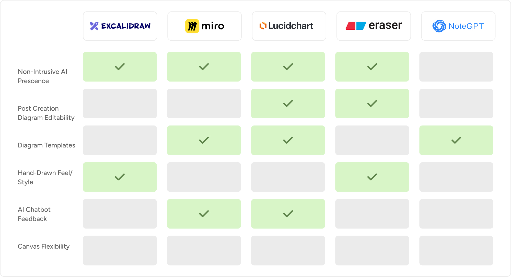
define
Control, flexibility, and feedback lead the design direction
Through research, Control, Flexibility, and Feedback stood out as the most consistently requested themes. Students didn't just want AI to generate diagrams, they wanted to guide the process, adjust the output, and understand what the AI was doing. These three goals shaped our problem statement and set the direction for our design process.

To further define the scope of this product, I mapped out a user flow to trace the decision points, screens, and actions a user takes when generating a diagram. The most telling finding was how frequently users move back and forth between the canvas and the chatbot to make small adjustments. This back-and-forth is the core interaction pattern, which made designing those transitions and touchpoints a clear priority.

ideation
Users want their interactions with AI to be straightforward
Users were wary of AI overstepping during note-taking, such as receiving unsolicited suggestions or having their diagrams automatically modified. A conversational AI felt unnecessary in the diagram-making process since users preferred working independently, without an AI personality guiding each step.
To solve this issue, I suggested swapping from a conversational chat to an instructional chat. This way, users were able to skip the fluff and jump straight into shaping their desired diagrams with full control.
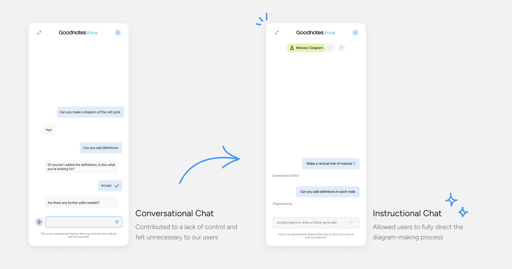
Users need the option to accept or reject what AI generates
Giving users the ability to accept or reject AI-generated content was central to the goal of control. The design went through multiple iterations, starting with a more verbose interface before being stripped back to clear iconography that kept the interaction lightweight and familiar.
Instructions in the message box was added in a later iteration to provide additional context, ensuring the feature remained intuitive without crowding the canvas.
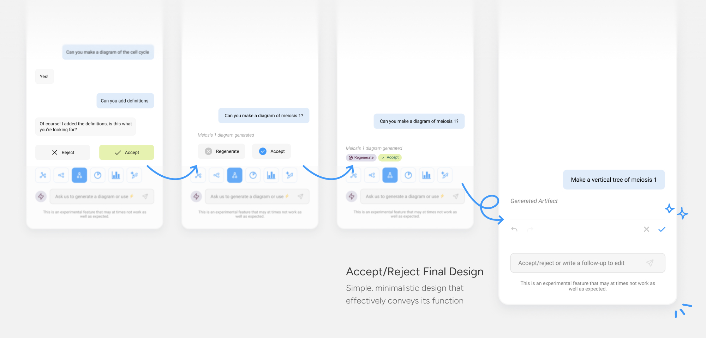
Canvas space is adaptable to user preferences
Users needed full ownership of their workspace, both in how they interact with the AI and how much of the canvas they can see at once.
To address this, the chat interface was designed in two modes: an expanded view for longer, more involved AI interactions, and a condensed view that pulls back to give users more room to focus on their diagram. Both modes can be freely repositioned across the canvas, so the interface never gets in the way of the work.
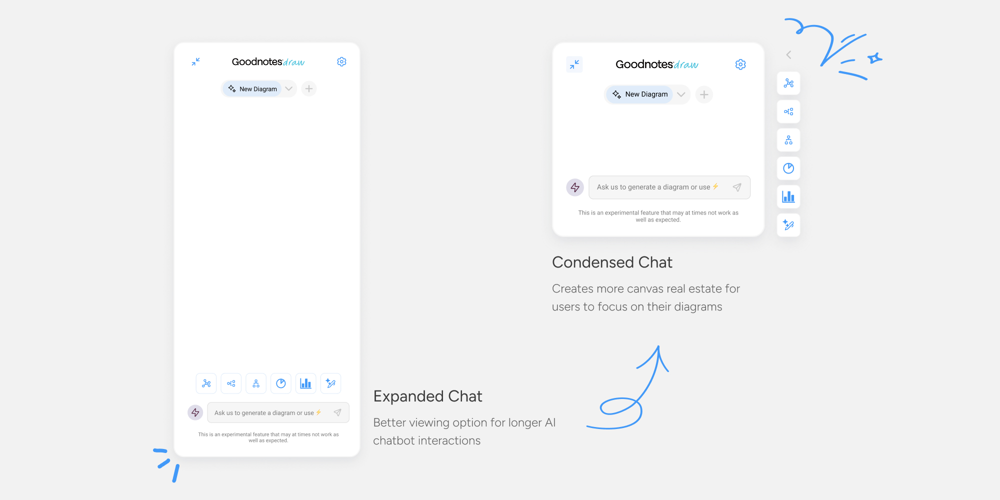
solution
Arrange your workspace in a way that make sense to you
Users can freely move the sidebar chatbot to fit their workspace needs, in addition to minimizing and condensing to allot for greater canvas real estate. There are several diagram presets to chose from and a drop-down menu to navigate to any previously generated diagram.
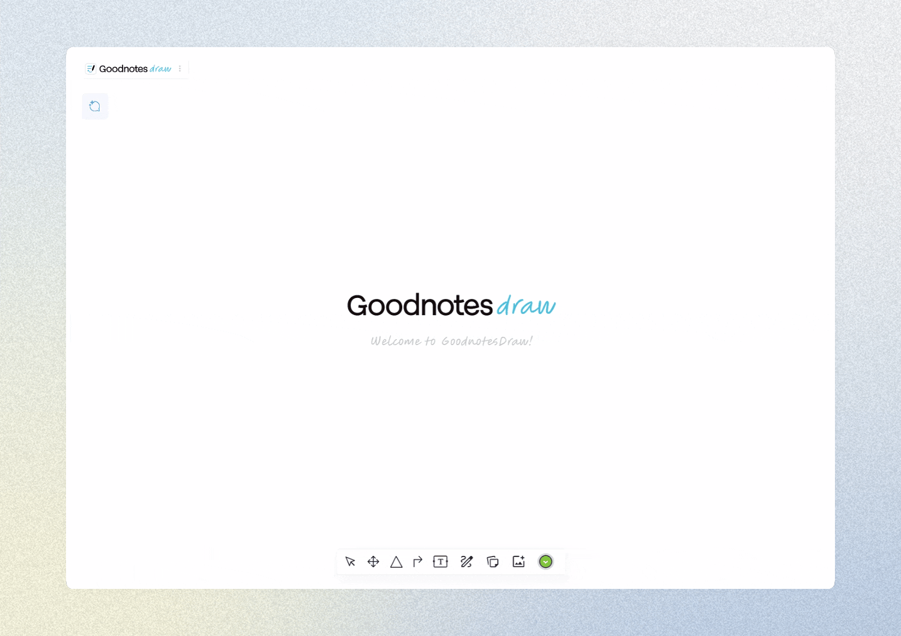
Prompt the AI and efficiently create follow-up edits
By using the sidebar chatbot, users can communicate to the AI the parameters of their desired diagram.
To make further edits to a generated diagram, users can send follow-up messages to get the perfect diagram for their notes, even after the diagram has been accepted.
Chatbot Prompt Flow
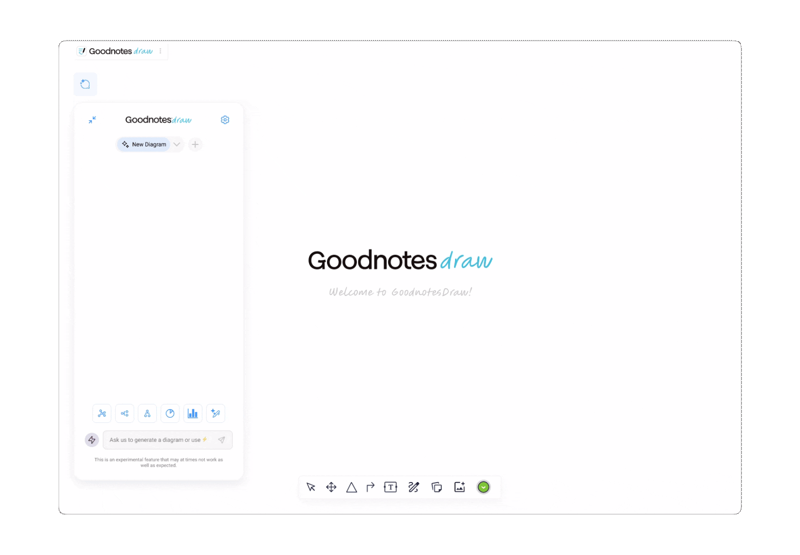
Follow-Up Flow
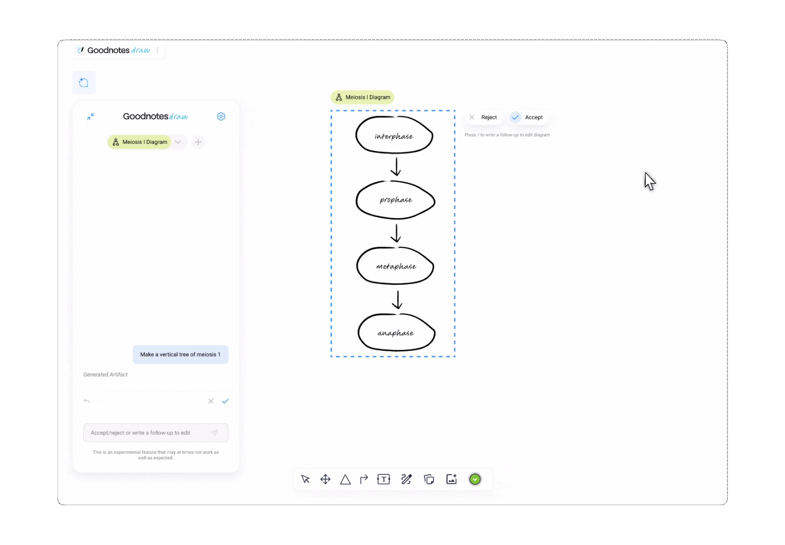
Accept or reject AI generated content to stay in control
Users can accept or reject the AI’s work with a click of a button to keep them in control of the diagram-making process. The chatbot will keep records of the user’s decision in the chat.
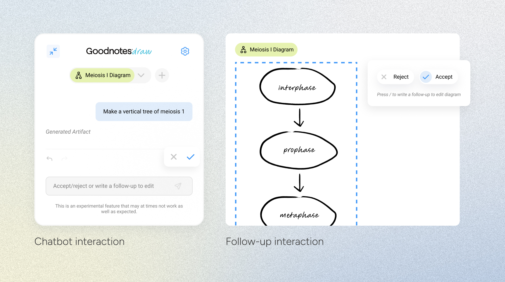
Make quick edits outside the main chat
Users can use the Quick Edit tool to swiftly modify specific elements within a diagram without having to restart their work by creating a new diagram.
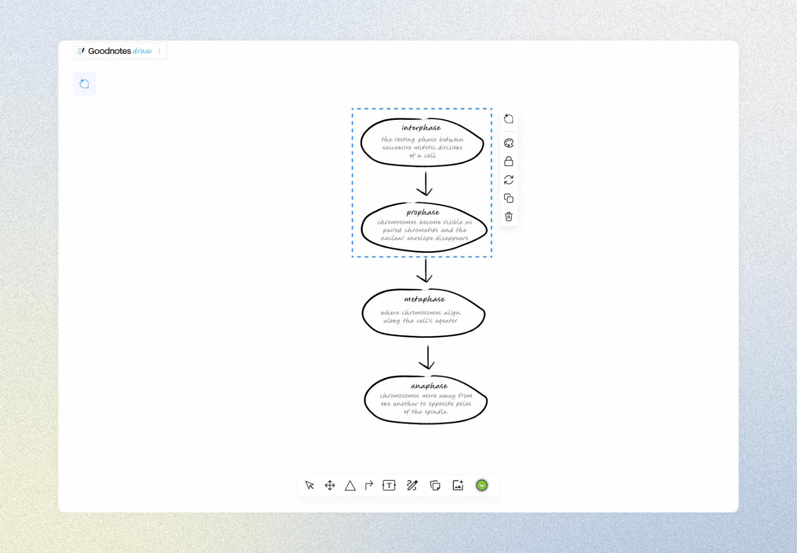
Ask AI for suggestions when you’re stuck
Users can access AI Suggestions through a button click to see a list of prompts to guide their diagram-making. It is optional way to help users make quick decisions while being completely non-invasive.
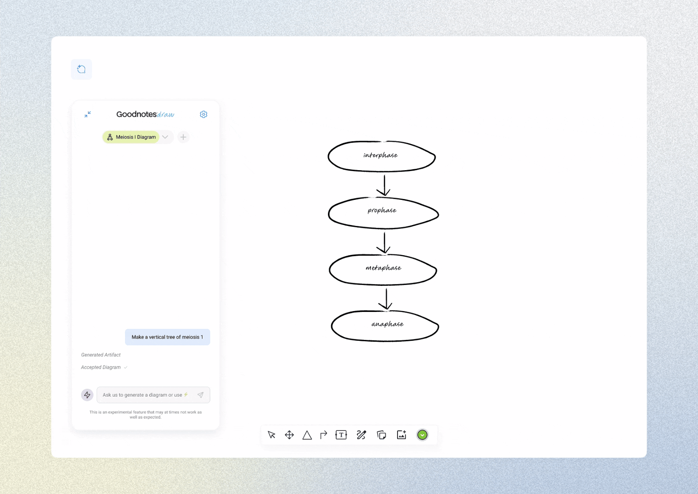
reflection
01 Micro interactions matter
In a product that requires minimal screens, but an emphasis on user input, micro interactions are massively important. I had to carefully interview Goodnotes users and everyday notetakers to understand how they would want to interact with the canvas and the AI chatbot.
02 Keep asking questions
Since this product relied heavily on understanding user behaviors, it was crucial that I kept asking questions to users to ensure I’d be designing based off of their preferences, not just my own. Because although it may be intuitive to me, that doesn’t mean that Goodnotes users would agree with me.`
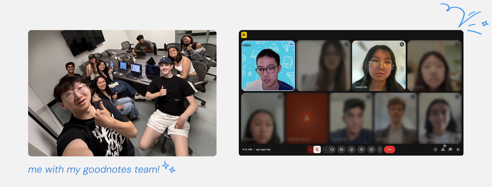